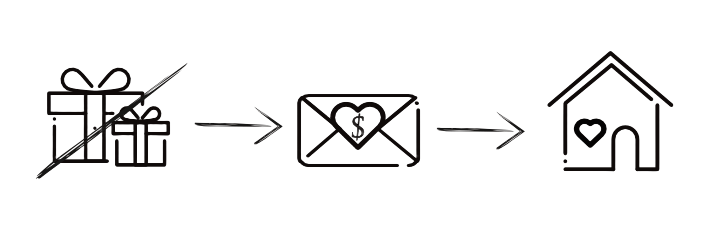

15:00 · Ceremonia ślubna
Kościół Narodzenia NMP w Gaju
ul. Maryjna 6
Prosimy o przybycie kilkanaście minut wcześniej, aby spokojnie zająć miejsca przed rozpoczęciem ceremonii.
Dziękujemy, że będziecie z nami w tym wyjątkowym dniu. Mamy nadzieję, że wspólnie stworzymy piękne wspomnienia, pełne radości, wzruszeń i uśmiechu.

15:00 · Ceremonia ślubna
Kościół Narodzenia NMP w Gaju
ul. Maryjna 6
Prosimy o przybycie kilkanaście minut wcześniej, aby spokojnie zająć miejsca przed rozpoczęciem ceremonii.
16:30 · Przyjęcie weselne
Szlachecki Dwór
Pobiednik Wielki 121
Powitanie pary młodej, pierwszy toast i wspólne rozpoczęcie świętowania.
Na miejscu jest dostępny parking, na którym możecie zostawić samochód i odebrać kolejnego dnia.16:40 · Zajęcie miejsc
Zachęcamy do wcześniejszego sprawdzenia swojego stolika, aby sprawnie zająć miejsca po przybyciu na salę weselną.
16:45 · Obiad
Tradycyjny rosół drobiowo-wołowy z makaronem i warzywną mozaiką
Pierś z kurczaka w płatkach kukurydzianych z młodymi ziemniakami z koperkiem
Marchewka z ananasem, buraczki zasmażane, mizeria
17:15 · Deser
Brownie z musem czekoladowym i sorbetem z czarnej porzeczki
17:45 · Życzenia dla pary młodej i zdjęcia z Gośćmi
Wodzirej wskaże kolejność składania życzeń według stolików.
Po złożeniu życzeń od razu pozujemy do zdjęcia z każdym gościem!
Kochani, bardzo zależy nam aby sprawnie odbyć tę część, dziękujemy ♡
19:00 · Pierwszy taniec
Walca wiedeńskiego zatańczy para numer 1 - Gabriela i Kacper.
20:00 · Kolacja I
Pierś z kurczaka z nadzieniem szpinakowo-serowym pod chmurką sosu parmezanowego z ćwiartkami ziemniaczanymi i sałatką coleslaw
21:30 · Tort i zimne ognie
Zapraszamy do ogrodu, abyście stworzyli dla nas magiczną chwilę w blasku zimnych ogni.
23:00 · Kolacja II
Pieczeń wieprzowa w sosie myśliwskim z kluskami śląskimi i surówką z czerwonej kapusty
23:40 · Oczepiny
W luźnej i przyjemnej atmosferze.
My też nie lubimy być w centrum uwagi ;)
"Wygrani"
zgarniają prezent - bez tańczenia, bez odpytywania i innych stresów - zatem śmiało dołączajcie! Kto
złapie ten wygrywa 🍾
01:30 · Kolacja III
Gulasz Strogonow
04:00 · Zakończenie wesela
Mamy nadzieję, że bawiliście się wybornie! Dziękujemy ♥
🎈 Zabawy i konkursy weselne
Chcemy podkreślić, że nie ma się czego obawiać. Nie będzie krępujących zadań, nikt nie będzie musiał tańczyć przed publicznością ani być w centrum uwagi.
Po prostu luźna integracja i przerywnik od zabawy tanecznej. Warto wziąć udział - przewidujemy małe nagrody.
📖 Księga gości
Zostawcie nam kilka słów — życzenia, porady, rysunki. Cokolwiek. Będziemy do tego wracać latami.
Możecie wkleić zdjęcia zrobione Instax-em.
📸 Aparat Instax
Po weselu zostają wspomnienia… ale jeszcze lepiej, gdy zostają zdjęcia. Instax będzie krążył po sali, więc śmiało róbcie fotki, wklejajcie do księgi gości albo zabierajcie ze sobą.
🍸 Drink bar
Do Waszej dyspozycji są profesjonalni barmani. W skrócie - opcja full-wypas. Zrobią wszystko na co macie ochotę!
A jak nie wiecie co checie... to przygotowali dla Was kilka gotowych propozycji
Zobacz propozycje koktajliLimitu nie ma - jedynym ograniczeniem są Wasze możliwości 😄
Pssst... Potrafią też robić świetne drinki bezalkoholowe
🎶 Zamów piosenkę
Masz ulubioną piosenkę, którą chciałbyś usłyszeć podczas naszego wesela? Wyślij swoje zamówienie!
🚌 Transport powrotny
Do Waszej dyspozycji będą dostępne dwa pojazdy: bus zabierający 8 osób oraz samochód osobowy zabierający 4 osoby.
Gdy zechcecie powrócić do domu skontaktujcie się ze świadkiem lub świadkową.
Wasze zdjęcia
Zrobiliście własne zdjęcia lub filmiki? Podzielcie się nimi!
Poniższy przycisk otworzy folder na dysku Google, do którego każdy z gości może przesłać własne zdjęcia i
filmiki.
